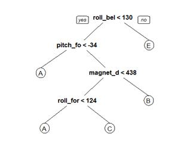

As part of the Coursera Machine Learning course this report aims to identify the fedilety of how people exercize by using the data recorded from accelerometers on the belt, forearm, arm, and dumbell of an indivudal.
The data for this assignment was generated by 6 indivudals instructed to carry out the same exercize (dumbell curls) with diffrent levels of fedilitey to the ideal case as recorded in the classe variable; "A" being the best way to carry out the exercixe and "E" the worst. The corresponding acellerometer data during the test was recorded and stored in a number of additional potential predictor variables, more information can be found here Data set details.
The data is used to develop a machine learning alogrithm using techniques learned in the course that is capable of distingushing the classe of an exercize given the same predictors variables as defined in the training data set.The model is then used to to predict 20 different test cases. the training data can be found here (https://d396qusza40orc.cloudfront.net/predmachlearn/pml-training.csv) and the test data here (https://d396qusza40orc.cloudfront.net/predmachlearn/pml-testing.csv)
rawtrainingset <- read.csv('pml-training.csv')
rawtestingset
<- read.csv('pml-testing.csv')
Upon examination there are 159 variables in the dataset (see below). However many of these columns lack significant data or contain factordata that is notrelated to the sensor data. In particular columns 1:7 (highlight) contain factor data.
trainingdata <- preprocesssdat(rawtrainingset)
## [1] "X" "user_name"
## [3] "raw_timestamp_part_1" "raw_timestamp_part_2"
## [5] "cvtd_timestamp" "new_window"
## [7] "num_window" "roll_belt"
## [9] "pitch_belt"
##...............Numeric accelerometer data columns.........
## [159] "magnet_forearm_z" "classe"
It is decided to exclude this for this first analyses whist it may effect the quality of the data, for example the "user" factor identifying the participant who carries out the exercize, one would expect each user to have a unique way of exercizing and this can contaminate signals from the acellerometers However it is reasonable to assumed this is a secondary effect since all the exercizes werecarried outunderthe supervision os a weight training expert.
The preprocessing of the data was carried out using the preprocessing() script For brevity it is not diaplayed here but can be in this directory. To summarise the source function it removes the 1st 7 columns (non acellerometer data) and loops through all the other acellerometer columns to see if they contains more that 70% numeric content if the column has less numeric content than this it is discarded.
#Load script to preprocess raw data
source("preprocessdat.R")
#process
training setnames<-c(colnames(trainingdata))
names<-names[-1]# remove
classe from list
#set testing set to have the same columns
testing
<- rawtestingset[ ,names]
The preprocessing produces a reduced data set having only 52 columns that have the best chance of being meaningful predictors for the classe factor.
The data was partitioned as follows the raw training set was
split in two a training(75%) and validation(25%) subset
# create training and
validation subset in original training set
trainset
<- createDataPartition(y=trainingdata$classe,p=0.75, list=FALSE)
training
<- trainingdata[trainset,]
validate
<- trainingdata[-trainset,]
Principal component analysis
A principal component analysis using Caret()shows that 80% of the observedvariation can be captured in 12 components.
#Principal
component analysis
preProc <- preProcess(training,method="pca",thresh=0.8)
train.PCs <- predict(preProc,training)
head(train.PCs,3)
## classe PC1
PC2 PC3 PC4
PC5 PC6
##
1 A 4.083056 2.207080 -2.738982
0.9998102 -1.259768 2.043469
##
3 A 4.090776 2.235259 -2.740660
0.9997363 -1.266987 2.052758
##
4 A 4.104656 2.229031 -2.726047
0.9972775 -1.279482 2.091164
## PC7 PC8 PC9 PC10
PC11 PC12
##
1 0.0814344 -2.749436 -0.04076096 -0.2672318 0.7618456 -1.0500781
##
3 0.0524812 -2.727663 -0.00973994 -0.2912576 0.7476391 -0.9772643
##
4 0.0237754 -2.698607 0.01317848
-0.3029658 0.7568923 -1.0054936
Simple GLM model
As a 1st cut the PCA analysis was used to build a simple GLM regression model. Here a model is run on classe with principle components using as.numeric() to convert the classe factors to numbers, ie A:F becomes 1:5 .Beacuse the predicted outcomes is a real number the result is rounded to generate the final class prediction
preProc <- preProcess(training,method="pca",thresh=0.8)
train.PCs <- predict(preProc,training)
# GLM
model outcome=classe and principle components use as.numeric to convert
modelFit1<- train(as.numeric(training$classe) ~.,method="glm",data=train.PCs)
#
calculate principal component for validation data
validate.princ.comps
<- predict(preProc,validate[,-1])
# used
test data motel to predict validation data
validatepredictions<-predict(modelFit1,validate.princ.comps)
#..........note
"validatepredictions" predictions are not integers
validatepredictions<-round(predict(modelFit1,validate.princ.comps))
#
compare results with confusion to get the accuracy
confusionMatrix(as.numeric(validate$classe),validatepredictions)
## Confusion Matrix and
Statistics
## Reference
##
Prediction 1 2
3 4 5
## 1 200 617 531 47 0
## 2
3 227 635 84 0
## 3
0 273 570 12 0
## 4
0 84 503 215 2
## 5
8 122 510 254 7
##
Overall Statistics
## Accuracy : 0.2486
## 95% CI : (0.2365, 0.2609)
## No Information Rate : 0.5606
## P-Value [Acc
> NIR] : 1
##
Statistics by Class:
## Class: 1 Class: 2 Class:
3 Class: 4 Class: 5
##
Sensitivity 0.94787 0.17158
0.2073 0.35131 0.777778
##
Specificity 0.74537 0.79838
0.8677 0.86277 0.817365
##
Pos Pred Value 0.14337
0.23920 0.6667 0.26741 0.007769
##
Neg Pred Value 0.99687
0.72288 0.4618 0.90317 0.999500
##
Prevalence 0.04303 0.26978
0.5606 0.12480 0.001835
##
Detection Rate 0.04078 0.04629
0.1162 0.04384 0.001427
##
Detection Prevalence 0.28446 0.19352
0.1743 0.16395 0.183728
##
Balanced Accuracy 0.84662 0.48498
0.5375 0.60704 0.797571
The model has only ~25% accuracy each classe is ~1/5 of the data so we have a 20% chance of guessing right ie. this model is little better than chance.Its not clear why the PCA naalysis shows that 80 % o fthe varianceis captured by the 12 PC components but the model performs so badly, It is suspected to be the concersion of the class factor into a numeric variable.
Next a series of general ML alogrithms are tried to see which would perform best on the data A Recursive partitioning tree model A gradient boosting machine model with 50 trees A gradient boosting machine model with 100 trees A random forest model with 50 trees. Model code summarized below
#Recursive partitioning tree model
modelFit2<-train(classe
~.,method = "rpart",data =
training)
#gradient
boosting machine model
modelFit3
<- train(classe ~.,method="gbm",data=training,
verbose=FALSE,tuneGrid
=
gbmcontrol)
#Random
forest model
modelFit4
<- train(classe ~.,method="rf",
data=training,prox=TRUE,ntree = 2)
A schematic tree of this model is shown in the following plot. The results from the model are also plotted.It can be seen this model has ~50% accuracy.The confusion matrix is plotted for the training data and the validation data.

Recursive tree model
diagram
## Confusion Matrix and Statistics
## Reference
##
Prediction A B
C D E
## A 1271 19
104 0 1
## B
407 316 226
0 0
## C
414 25 416
0 0
## D
374 139 291
0 0
## E
138 114 217
0 432
##
Overall Statistics
## Accuracy : 0.4965
## 95% CI : (0.4824, 0.5106)
## No Information Rate : 0.531
## P-Value [Acc > NIR] : 1
##
Statistics by Class:
## Class: A Class: B Class:
C Class: D Class: E
##
Sensitivity 0.4881 0.51550
0.33174 NA 0.99769
##
Specificity 0.9461 0.85248
0.87973 0.8361 0.89510
##
Pos Pred Value 0.9111
0.33298 0.48655 NA
0.47947
##
Neg Pred Value 0.6201 0.92491
0.79304 NA 0.99975
##
Prevalence 0.5310 0.12500
0.25571 0.0000 0.08830
##
Detection Rate 0.2592 0.06444
0.08483 0.0000 0.08809
##
Detection Prevalence 0.2845 0.19352
0.17435 0.1639 0.18373
##
Balanced Accuracy 0.7171 0.68399
0.60573 NA 0.94640
Clearly a partition style tree model is much better with an accuracy ~50% The algorithm seems to struggle to identify classe �D� .To improve the predictions the next step is to look at aggregated type models .boosted tree models and random forests.
Here a gradient boosted model is run on the same data. The results are shown below .his model has an impressive 93% accuracy.The confusion matrix is plotted for the training data and the validation data.
## Confusion Matrix and
Statistics
## Reference
##
Prediction A B
C D E
## A 1351 26
8 8 2
## B
81 814 39
11 4
## C
0 41 799
13 2
## D
4 9 45
738 8
## E
4 24 20
18 835
##
##
Overall Statistics
## Accuracy : 0.9252
## 95% CI : (0.9174, 0.9324)
## No Information Rate : 0.2936
## P-Value [Acc > NIR] : < 2.2e-16
##
Statistics by Class:
## Class: A Class: B Class:
C Class: D Class: E
##
Sensitivity 0.9382 0.8906
0.8771 0.9365 0.9812
##
Specificity 0.9873 0.9662
0.9860 0.9840 0.9837
##
Pos Pred Value 0.9685 0.8577
0.9345 0.9179 0.9267
##
Neg Pred Value 0.9746 0.9747
0.9723 0.9878
0.9960
##
Prevalence 0.2936 0.1864
0.1858 0.1607 0.1735
##
Detection Rate 0.2755 0.1660
0.1629 0.1505 0.1703
##
Detection Prevalence 0.2845 0.1935
0.1743 0.1639 0.1837
##
Balanced Accuracy 0.9627 0.9284
0.9315 0.9603 0.9825
The model is rerun with n.trees=100 trees. An the results shown below now the prediction accuracy has increaced to 96% accuracy.The confusion matrix is plotted for the training data and the validation data.
## Confusion Matrix and
Statistics
## Reference
##
Prediction A B
C D E
## A 1381 10
1 1 2
## B
39 882 22
3 3
## C
0 26 819
9 1
## D
0 4 27
760 13
## E
0 9
8 16 868
##
##
Overall Statistics
## Accuracy : 0.9604
## 95% CI : (0.9546, 0.9657)
## No Information Rate : 0.2896
## P-Value [Acc
> NIR] : < 2.2e-16
##
Statistics by Class:
## Class: A Class: B Class:
C Class: D Class: E
##
Sensitivity 0.9725 0.9474
0.9339 0.9632 0.9786
##
Specificity 0.9960 0.9831
0.9911 0.9893 0.9918
##
Pos Pred Value 0.9900 0.9294
0.9579 0.9453 0.9634
##
Neg Pred Value 0.9889 0.9876
0.9857 0.9929 0.9953
##
Prevalence 0.2896 0.1898
0.1788 0.1609 0.1809
##
Detection Rate 0.2816 0.1799
0.1670 0.1550 0.1770
##
Detection Prevalence 0.2845 0.1935
0.1743 0.1639 0.1837
##
Balanced Accuracy 0.9843 0.9653
0.9625 0.9763 0.9852
The last model looked at was a random forest model. the results are shown below this model gas has~ 99% accuracy. The confusion matrix is plotted for the training data and the validation data.
## Confusion Matrix and
Statistics
## Reference
##
Prediction A B
C D E
## A 1391 4
0 0 0
## B
7 937 4
1 0
## C
0 2 853
0 0
## D
1 0 5
797 1
## E
0 0 2
3 896
##
Overall Statistics
## Accuracy : 0.9939
## 95% CI : (0.9913, 0.9959)
## No Information Rate : 0.2853
## P-Value [Acc > NIR] : < 2.2e-16
##
Statistics by Class:
## Class: A Class: B Class:
C Class: D Class: E
##
Sensitivity 0.9943
0.9936 0.9873 0.9950
0.9989
##
Specificity 0.9989 0.9970
0.9995 0.9983 0.9988
##
Pos Pred Value 0.9971 0.9874
0.9977 0.9913 0.9945
##
Neg Pred Value 0.9977 0.9985
0.9973 0.9990 0.9998
##
Prevalence 0.2853 0.1923
0.1762 0.1633 0.1829
##
Detection Rate 0.2836 0.1911
0.1739 0.1625 0.1827
##
Detection Prevalence 0.2845 0.1935
0.1743 0.1639 0.1837
##
Balanced Accuracy 0.9966 0.9953
0.9934 0.9967 0.9988
To conclude the best model is the Random forest model here that model is used to predict the testing data set.
#Using model 4....random forest n=50 trees
testingpredictions <- predict(modelFit4,newdata=testing)
results<-c(1:length(testingpredictions))
for (i in 1:length(testingpredictions)){#loop through all columns
results[i]<-paste(i,"=",testingpredictions[i],sep="") }
results
## [1] "1=B" "2=A" "3=B" "4=A" "5=A" "6=E" "7=D" "8=B" "9=A" "10=A"
##
[11] "11=B" "12=C" "13=B" "14=A"
"15=E" "16=E" "17=A" "18=B"
"19=B" "20=B"